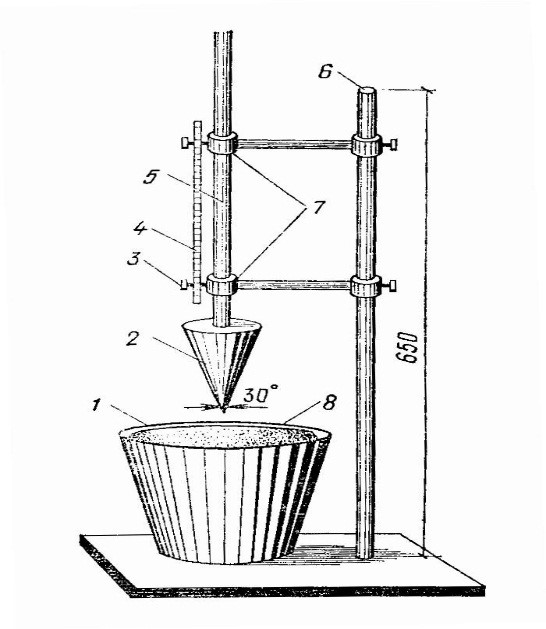

Строительный шту¬катурный раствор — это смесь минерального вяжу¬щего, заполнителя, воды и при необходимости доба¬вок. Штукатурные растворы бывают легкие (плотность менее 1500 кг/м3 ) и тяжелые (плотность более 1500 кг/м3). В зависимости от содержания вяжущего — тощие и жирные. В зависимости от скорости твердения — быстро схватывающиеся и медленно схватывающиеся. Разделяют растворы на простые (глиняные, гип¬совые, цементные, известковые) и сложные (цемент¬но-известковые,известково-гипсовые,цементно-глиняные).
| Растворы | Состав | Приготовление | Применение | Свойства |
|---|---|---|---|---|
| Глиняные | Вяжущее - глина; заполнитель - песок, соломенная сечка, древесные опилки, стружка; жирные глины - 1:4, средние глины -1:3; тощие глины - 1:2,5 | Глину кладут в емкость и заливают холодной водой, разминают ее и оставляют на сутки, затем еще раз разминают, добавляя воду, и в полученную глиняную массу добавляют песок | Применяются для укладки и оштукатуривания печей и труб, внутренних стен и перегородок малоэтажных зданий, эксплуатируемых в сухом климате | Высокая пластичность; высокая связность; хорошая подвижность; удобоукладываемость; хорошая водоудерживающая способность; хорошее сцепление с основанием; низкая стоимость, но небольшая прочность и слабая водостойкость |
| Известко-вые | Вяжущее - известковое молоко или тесто; заполнитель - песок; обрызг - 1:(2,5...4), грунт - 1:(2... 3), накрывка - 1:(1... 1,5) | В ящик кладут известковое тесто, процеженное через сито. Затем добавляют просеянный песок небольшими порциями и все перемешивают | Применяются для оштукатуривания стен и потолков в сухих помещениях | Высокая пластичность, удобоукладываемость, медленная схватываемость, медленное отвердевание, при твердении выделяют воду, медленно сохнут, легки в работе |
| Известково-гипсовые | Известковый раствор и гипс; обрызг - 1:(0,3...1):(2...3); грунт - 1:(0,5... 1,5):(1,5... 2); накрывка - 1:(1... 1,5): 0 | Приготавливают небольшими порциями. В растворный ящик наливают воду и насыпают туда тонкий слой гипса, быстро перемешивают и добавляют известковый раствор, еще раз быстро перемешивают | Применяются для оштукатуривания поверхностей в неувлажняемых помещениях | Быстро схватываются, быстро твердеют, высокая пластичность, неводостойкость |
| Цементные | Вяжущее - цемент, заполнитель - песок от 1:1 до 1:6 | Отмеряют дозами цемент и песок, перемешивают и просеивают. Приготовленную сухую смесь затворяют водой | Применяются в сырых местах, а также для оштукатуривания наружных стен, фундаментов, цоколей | Дорогостоящие, менее удобные в работе, менее пластичные, менее удобоукла-дываемые, морозостойкие, водостойкие, прочные |
| Цементно-известковые | Вяжущее - цемент, известковое тесто; заполнитель - песок | Из цемента и песка делают сухую смесь, отмеряют нужное количество известкового молока и на нем затворяют цементную смесь. Приготавливают известковый раствор, в раствор добавляют цемент и все перемешивают | Применяются для оштукатуривания наружных стен зданий, а также помещений с повышенной влажностью воздуха в процессе эксплуатации, цоколей и т.д. | Медленно схватываются, пластичнее цементных, прочные, влагостойкие, морозостойкие, более удобоукладываемые, дешевле цементных |
